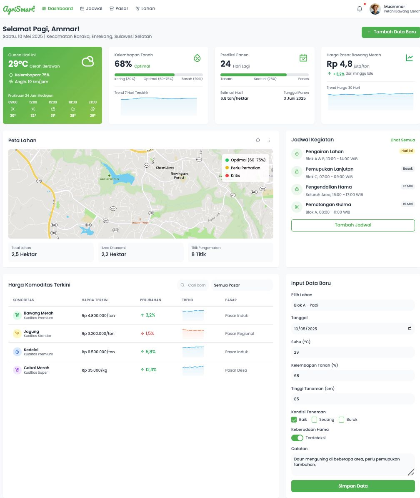

Tentang AgriSmart
AgriSmart adalah platform interaktif berbasis web yang dirancang untuk membantu petani dan pelaku usaha di sektor pertanian dalam mengambil keputusan berbasis data. Dengan menggunakan analisis data dan teknologi, AgriSmart akan mempermudah petani untuk mengelola hasil panen, merencanakan penanaman, dan mengoptimalkan biaya.
Mengapa AgriSmart?
- Banyak petani yang kesulitan dalam menganalisis data pertanian.
- Keputusan terkait tanam, pemupukan, dan panen seringkali diambil berdasarkan perkiraan tanpa dasar analitik.
- Akses terhadap data dan teknologi yang terbatas.
Fitur Utama
- Rekomendasi Tanaman
- Laporan Hasil Panen
- Prediksi Cuaca
- Rekomendasi Pupuk
Target Pengguna
Petani lokal, koperasi, UMKM sektor pertanian.
Tujuan & Manfaat
- Meningkatkan produktivitas
- Perencanaan tanam lebih baik
- Efisiensi biaya dan sumber daya
Teknologi & Data
Menggunakan VSCODE Memudahkan dalam analisis data Cuaca, kualitas tanah dan hasil panen, Dapat membuat grafik dan visualisasi yang menarik serta informatif untuk memahami data Banyak sumberdaya dan tutorial yang tersedia sehingga mudah untuk belajar
Business Value
-
Peningkatan Produktivitas Pertanian
Dengan fitur analisis data, AgriSmart membantu petani mengoptimalkan waktu tanam, penggunaan pupuk, dan strategi distribusi.
-
Pemberdayaan UMKM Pertanian
Platform ini menjadi alat edukatif dan transformatif bagi UMKM untuk masuk ke ekosistem digital dan data-driven.
-
Efisiensi Biaya Operasional
Rekomendasi berbasis data mengurangi pemborosan air, pupuk, dan tenaga kerja, sehingga biaya produksi menurun.
Competitor Analysis
FarmLogs: Aplikasi untuk manajemen lahan dan pemantauan cuaca.
Climate FieldView: Platform untuk analisis data pertanian.
AgriWebb: Solusi manajemen pertanian berbasis cloud.
Business Model Canvas
BMKG, Dinas Pertanian, Penyedia data agrikultur
Pengembangan platform, Optimalisasi data panen, Sosialisasi ke komunitas
Keputusan berbasis data, efisiensi panen & biaya, mudah diakses
Dukungan langsung, komunitas, pendampingan koperasi
Petani, koperasi, UMKM agribisnis, penyuluh pertanian
Tim dev, agronomis, data pertanian, tim support
Website, media sosial, pelatihan offline/online
Hosting, pengembangan, pelatihan, SDM, data
Langganan premium, penjualan data, B2B, pelatihan berbayar
Tim Kami
Laili Kamalia Mashuri
Dewi Astuti
Muammar
Elma Allo Langi'
Miftahul Jannah Usman